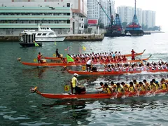
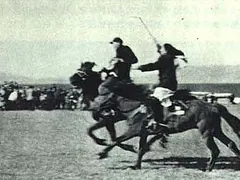

非遗图鉴 / 江湖百戏
06
非遗图鉴 · 传统体育、游艺与杂技
江湖百戏
传统体育、游艺与杂技 · 109 项、166 子项 · 第 2 / 2 页（Ⅵ-61 至 Ⅵ-109）
每一条只列名录上的事实：编号、名称、申报地区或单位、公布年份和批次。详情看中国非物质文化遗产网的官方页。在名录检索里查这一门类 →
- Ⅵ-61
肘捶
- 山东省临清市2011 第三批 · 新增项目官方页 →
- Ⅵ-62
十八般武艺
- 浙江省杭州市余杭区2011 第三批 · 新增项目官方页 →
- Ⅵ-63
华佗五禽戏
- 安徽省亳州市2011 第三批 · 新增项目官方页 →
- Ⅵ-64
- Ⅵ-65
赛龙舟

慶祝2008年北京奧林匹克運動會暨2008年度東區龍舟競渡大賽於香港港島柴灣公眾貨物起卸區舉行，由柴灣漁民娛樂會舉辦图：Stewart~惡龍 / CC BY 3.0 / 维基共享资源。本站已缩放裁切。 - Ⅵ-66
迎罗汉
- 浙江省缙云县2011 第三批 · 新增项目官方页 →
- Ⅵ-67
掼牛
- 浙江省嘉兴市南湖区2011 第三批 · 新增项目官方页 →
- Ⅵ-68
高杆船技
- 浙江省桐乡市2011 第三批 · 新增项目官方页 →
- Ⅵ-69
- Ⅵ-70
口技
- 北京市西城区2011 第三批 · 新增项目官方页 →
- Ⅵ-71
布鲁
- 内蒙古自治区库伦旗2014 第四批 · 新增项目官方页 →
- Ⅵ-72
蒙古族驼球
- 内蒙古自治区乌拉特后旗2014 第四批 · 新增项目官方页 →
- Ⅵ-73
通背拳
- 北京市西城区2014 第四批 · 新增项目官方页 →
- Ⅵ-74
戳脚
- 河北省衡水市桃城区2014 第四批 · 新增项目官方页 →
- Ⅵ-75
精武武术
- 上海市虹口区2014 第四批 · 新增项目官方页 →
- Ⅵ-76
绵拳
- 上海市杨浦区2014 第四批 · 新增项目官方页 →
- Ⅵ-77
- Ⅵ-78
井冈山全堂狮灯
- 江西省井冈山市2014 第四批 · 新增项目官方页 →
- Ⅵ-79
徐家拳
- 山东省新泰市2014 第四批 · 新增项目官方页 →
- Ⅵ-80
梅山武术
- 湖南省新化县2014 第四批 · 新增项目官方页 →
- Ⅵ-81
武汉杂技
- 湖北省武汉市2014 第四批 · 新增项目官方页 →
- Ⅵ-82
- Ⅵ-83
藏棋
- 四川省阿坝藏族羌族自治州2021 第五批 · 新增项目官方页 →
- Ⅵ-84
曲棍球
- 曲棍球（维吾尔族曲棍球）新疆维吾尔自治区和田地区于田县2021 第五批 · 新增项目官方页 →
- Ⅵ-85
无极拳
- 天津市东丽区2021 第五批 · 新增项目官方页 →
- Ⅵ-86
少北拳
- 辽宁省锦州市2021 第五批 · 新增项目官方页 →
- Ⅵ-87
西凉掌
- 西凉掌（亳州晰扬掌）安徽省亳州市2021 第五批 · 新增项目官方页 →
- Ⅵ-88
六合拳
- 六合拳（福建六合门）福建省2021 第五批 · 新增项目官方页 →
- Ⅵ-89
巫家拳
- 湖南省湘潭市2021 第五批 · 新增项目官方页 →
- Ⅵ-90
岩鹰拳
- 湖南省邵阳市新宁县2021 第五批 · 新增项目官方页 →
- Ⅵ-91
莫家拳
- 广东省2021 第五批 · 新增项目官方页 →
- Ⅵ-92
青萍剑
- 青萍剑（贾氏青萍剑）河北省沧州市黄骅市2021 第五批 · 新增项目官方页 →
- Ⅵ-93
易筋经
- 易筋经（天台山易筋经）浙江省台州市天台县2021 第五批 · 新增项目官方页 →
- Ⅵ-94
青城武术
- 四川省成都市都江堰市2021 第五批 · 新增项目官方页 →
- Ⅵ-95
布依族武术
- 贵州省黔西南布依族苗族自治州安龙县2021 第五批 · 新增项目官方页 →
- Ⅵ-96
乌审走马竞技
- 内蒙古自治区鄂尔多斯市乌审旗2021 第五批 · 新增项目官方页 →
- Ⅵ-97
迎大旗
- 浙江省金华市磐安县2021 第五批 · 新增项目官方页 →
- Ⅵ-98
泉州刣狮
- 福建省泉州市石狮市2021 第五批 · 新增项目官方页 →
- Ⅵ-99
抢花炮
- 抢花炮（壮族抢花炮）广西壮族自治区南宁市邕宁区2021 第五批 · 新增项目官方页 →
- Ⅵ-100
滑竿
- 滑竿（华蓥山滑竿抬幺妹）四川省广安市2021 第五批 · 新增项目官方页 →
- Ⅵ-101
赤水独竹漂
- 贵州省遵义市赤水市2021 第五批 · 新增项目官方页 →
- Ⅵ-102
拔河
- 拔河（万人扯绳赛）甘肃省甘南藏族自治州临潭县2021 第五批 · 新增项目官方页 →
- Ⅵ-103
姑娘追
- 新疆维吾尔自治区阿勒泰地区青河县2021 第五批 · 新增项目官方页 →

1963-04 1963年 姑娘追图：《人民画报》1963年4月 / Public domain / 维基共享资源。本站已缩放裁切。 - Ⅵ-104
朝鲜族尤茨
- 吉林省吉林市2021 第五批 · 新增项目官方页 →
- Ⅵ-105
打陀螺
- 云南省2021 第五批 · 新增项目官方页 →
- Ⅵ-106
登杆
- 登杆（大六分村登杆）天津市静海区2021 第五批 · 新增项目官方页 →
- Ⅵ-107
飞叉
- 飞叉（永良飞叉）天津市武清区2021 第五批 · 新增项目官方页 →
- Ⅵ-108
临泉杂技
- 安徽省阜阳市临泉县2021 第五批 · 新增项目官方页 →
- Ⅵ-109
蹬技
- 蹬技（重庆蹬技）重庆市2021 第五批 · 新增项目官方页 →